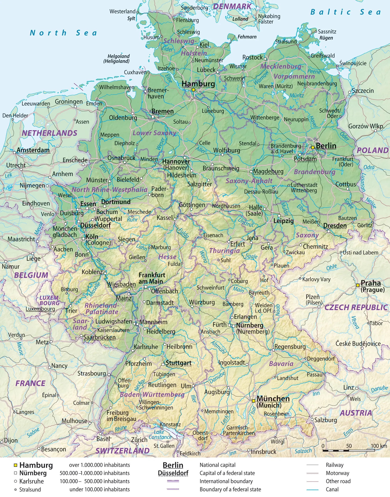

Summary
Germany is a diverse and modern country at the heart of Europe, known for its rich history, cutting-edge industries, fairytale landscapes, and vibrant cultural traditions. From medieval towns and world-class museums to innovative cities like Berlin and Munich, it offers a blend of old-world charm and contemporary energy.
Getting around
Transport
Germany boasts one of Europe's most efficient transportation systems, including high-speed ICE trains that connect major cities, extensive regional rail networks, and clean, reliable public transit in urban areas. Renting a car is popular for exploring rural regions and the Autobahn, while domestic flights cover longer distances quickly.
Safety
Germany is generally very safe for travelers, with low crime rates and well-maintained public spaces. As in any major country, it's wise to stay alert in crowded areas, keep belongings secure on public transport, and follow local guidance. Emergency services are responsive, and most destinations are safe to explore both day and night.